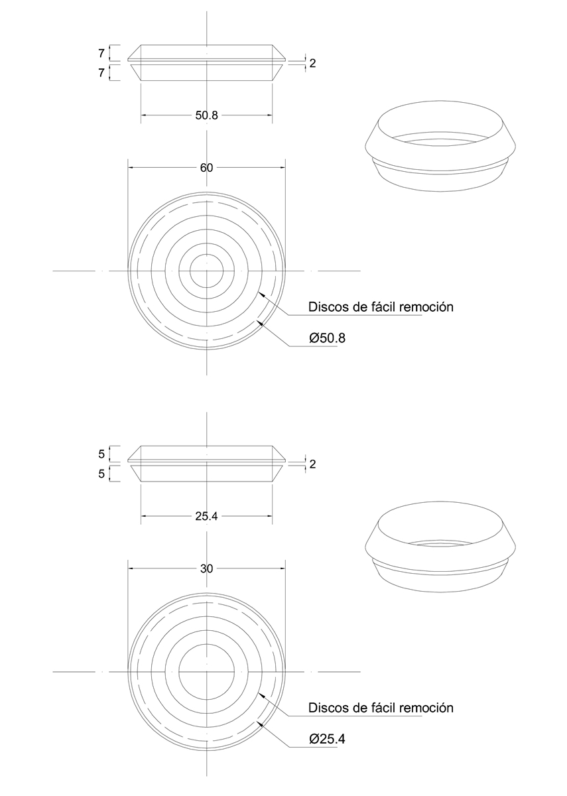

Siempre es más fácil conocer las normas ENEL-CODENSA
Rolex Rolex gold watch, compared with ordinary materials, gold watches are often expensive, but the replica rolex gold watch has the role of swiss replica watches hedging, so that it often becomes the first choice for collectors. The gold watch has value in the world, largely because the omega replica watch brand launched a commemorative limited edition watch or a replica hublot complex movement process or artistic attainments deep watches, mostly preferred gold precious metals such material. These watches tend to have a strong hedging function, therefore, Rolex Rolex gold watch reputation.

ET925 Caja de borneras para derivación de acometidas
Datos adicionales
Número de especificación
ET 925
Fecha de vigencia
24/06/2021
Herramientas adicionales
- Contenido Ocultar
- 1. OBJETO
- 2. ALCANCE
- 3. CONDICIONES DE SERVICIO
- 4. SISTEMA DE UNIDADES
- 5. NORMAS DE FABRICACIÓN Y PRUEBAS
- 6. REQUERIMIENTOS TÉCNICOS PARTICULARES
- 6.1 GEOMÉTRICOS
- 6.2 QUÍMICOS
- 6.3 ELÉCTRICAS. Borneras de conexión y barra de neutro.
- 6.4 MECÁNICOS
- 7. PRUEBAS
- 7.1 INSPECCIÓN VISUAL
- 7.2 VERIFICACIÓN DIMENSIONAL
- 7.3 VERIFICACIÓN DEL CIERRE Y APERTURA DE LA TAPA
- 7.4 ANÁLISIS QUÍMICO
- 7.5 PRUEBAS MECÁNICAS
- 7.6 ENSAYOS ELÉCTRICOS
- 8. MUESTREO
- 9. MARCACIÓN, EMPAQUE Y ROTULADO
- 9.1 MARCACIÓN
- 9.2 EMPAQUE
- 9.3 ROTULADO
- 10. GARANTÍA DE FÁBRICA
- 11. REQUISITOS DE LAS OFERTAS
1. OBJETO
Establecer las características, requisitos y ensayos técnicos que deben cumplir las cajas con borneras para acometidas BT en sistemas de distribución.2. ALCANCE
Esta especificación técnica se aplicará en todas las cajas con bornera para acometidas BT que adquiera Enel Codensa.3. CONDICIONES DE SERVICIO
Las cajas con bornera para acometidas serán utilizadas para conectar las derivaciones de las diferentes acometidas en las líneas aéreas de B.T.; estos elementos serán empleados a la intemperie bajo las siguientes condiciones:a. Condiciones ambientales
| CARACTERÍSTICAS AMBIENTALES | |
| a. Altura sobre el nivel del mar | Desde 2900 a los 600 m.s.n.m. |
| b. Ambiente | Tropical |
| c. Humedad relativa | Desde 100% a el 20% |
| d. Temperatura máxima y mínima | +45 °C y -5 °C respectivamente |
| e. Temperatura promedio | 14 °C |
| f. Polución | Alta con productos de la combustión y altamente contaminada por otros agentes. |
| CARACTERÍSTICAS ELECTRICAS | |
| a. Tensión Nominal | 120/240 V, 120/208 V, 120V |
| b. Tensión Máxima | 600 V |
| c. Frecuencia del sistema | 60 Hz |
| d. Disposición del barraje | Trifásica tetrafilar |
4. SISTEMA DE UNIDADES
Todos los documentos tanto de la propuesta como del contrato de suministro, deben expresar las cantidades numéricas en unidades del Sistema Internacional (SI). Si el OFERENTE utiliza en sus libros de instrucción, folletos o dibujos, unidades en sistemas diferentes, debe hacer las conversiones respectivas.5. NORMAS DE FABRICACIÓN Y PRUEBAS
| NORMA | DESCRIPCIÓN |
| IEC 29 | “Degrees of protection provided by enclosures. |
| NTC –ISO 2859-1 | Muestreo para inspección |
| AN 60-E-01 | Código de Ensayos de Electricité de France |
| IEC 144 | “Degrees of protection of enclosures for low voltage switchgear and controlgear”. |
| HN 60-E-01 | Código de Ensayos de Electricité de France apartado 6. |
| ANSI/ASTM 635 | Ensayo de autoextinción. |
| ASTM B117 | Prueba de Cámara Salina |
| ASTM G26 | Prueba de envejecimiento climático |
| UNE-EN 50298 | Requisitos generales para las envolventes vacías |
| UNE-EN 50102 | Verificación Grado de Protección Contra Impactos mecánicos externos |
| IEC 529 | Degrees of protection provided by enclosures (IP Code) |
| NTC 2244 | Pruebas eléctricas de herrajes eléctricos |
| IEC 62262 | Degrees of protection provided by enclosures for electrical equipment against external mechanical impacts (IK code) |
| NTC 2154 | Bloques de terminales para uso industrial |
| NTC 3279 | Grados de protección dados por encerramiento de equipo eléctrico código IP |
| UL 746C | Polymeric Materials - Use in Electrical Equipment Evaluations |
| UL 1059 | Terminal Blocks |
| UL 94 | Auto extinción o flamabilidad |
| ASTM D14000 | Medición de espesores de recubrimiento |
| NCT 5991 | Envases y embalajes. requisitos de los envases y embalajes valorizables mediante compostaje y biodegradación. programa de ensayo y criterios de evaluación para la aceptación final del envase o embalaje |
| ASTM D6400-04 | Standard Specification for Compostable Plastics |
6. REQUERIMIENTOS TÉCNICOS PARTICULARES
La caja polimérica con bornera para acometidas BT estará construida con materiales con la mejor calidad para ese fin, debiéndose descartar el empleo de materiales alterables por la humedad, radiación solar y otras condiciones ambientales desfavorables.La caja con sus borneras será compacta y liviana, deberá construirse en materiales plásticos, fácilmente mecanizables que se puedan limar, cortar, agujerear y frezar sin que se sobrecalienten. Además debe ser autosoportable, completamente rígida e indeformable, sin aristas, bordes ni esquinas vivas, agudas o cortantes y no debe presentar desajustes durante su transporte e instalación.
Cada caja con sus borneras debe permitir además del cableado de alimentación 3 x 2 AWG (Pi 6,543 mm) + 1 x 4 AWG (Pi 5,189 mm) la derivación de hasta seis (6) acometidas trifásicas o doce (12) monofásicas y maniobrar fácilmente tanto la conexión a la red secundaria, como la derivación de las acometidas.
El índice de hermeticidad para las cajas será IP 44 de acuerdo a la norma IEC 529, grado de protección contra choques IK10 ( 20.00 julios).
Para una instalación segura deberá poseer en la parte posterior unos pasadores de lámina o del mismo material de la base, que permitan a la caja ser sujetada directamente a la red trenzada en el vano mediante amarres plásticos o metálicos, igualmente deberá permitir montaje al poste por medio de dos cintas de acero inoxidable de 5/8” (Band it) y debe permitir la instalación en Muro o Fachada mediante pernos. Los pasadores deben estar debidamente centrados y unidos a la caja (la unión debe garantizar la fusión de las dos partes “soldadas”).
La posición de la caja debe quedar en forma tal que facilite la derivación vertical de las acometidas aéreas.
Las cajas con borneras para derivación de acometidas aéreas se componen de dos (2) partes: La base con las borneras y la puerta. Así mismo, estas deberán poseer todos los accesorios necesarios y suficientes para su correcta utilización, funcionamiento y fácil transporte.
6.1 GEOMÉTRICOS
6.1.1 BaseDimensiones maximas de la base:
- Ancho y altura: 332 mm (con la pestaña que tiene 11 mm alrededor), 310 mm sin pestaña,
- Profundidad: 120 mm.
Las dimensiones anteriores deben ser tales que aseguren una optima ubicación de las borneras, así mismo que garantice la facil conexión y desconexion de la alimentación y las acometidas
La base de la caja debe poseer en la parte inferior una perforación de minimo 33mm de diámetro para la entrada del cable cuádruplex que viene desde la red secundaria hacia las borneras y mínimo ocho (8) perforaciones de las cuales cuatro (4) deben tener minimo 13mm de diámetro y cuatro (4) minimo 23mm de diametro, para la salida de las acometidas de los usuarios.
Todos los orificios deben tener sus respectivos pasacables o tapones (prensaestopa) removibles adaptables a diferentes diámetros de cable, los cuales podrán ser fabricados en material sintético, PVC, plástico o caucho resistente a la radiación solar. El uso del sistema prensa estopa no sera una exigencia, excepto en las ocasiones especiales donde lo requiera, como en el caso en que se instalen directamente en la red trenzada.
La base de la caja debe incluir una pestaña con un agujero roscado que forma parte del sistema de cierre, que recibirá el perno especial de la tapa.
En la base de la caja se deben colocar los medios para soportar el terminal de tierra, la barra del neutro y el bloque aislante que contiene las borneras de fase; el bloque aislante cumple con las funciones de sujetar, separar y aislar los bornes de fase, además de darle la altura suficiente para que sobresalga del fondo, logrando así facilidad en la conexión de las acometidas.
6.1.2 Puerta
Dimensiones maximas de la puerta:
- Ancho y altura: 340 mm (con el marco protector contra la lluvia de 12,5 mm ± 2,5mm); sin marco: 315 mm ± 5mm.
- Profundidad: 55 mm (teniendo en cuenta la pestaña protectora).
Las anteriores dimensiones deben corresponder a las dimensiones de la base para su perfecto acople.
La puerta de la caja tendrá grabado en alto relieve una inscripción en letras mayúsculas que diga “USO EXCLUSIVO DE ENEL CODENSA”, la señal de peligro alta tensión según el RETIE y adicionalmente la marca del fabricante, fácilmente visibles desde el exterior. La caja debe ser fabricada con un marco alrededor, de forma que permita el cierre y ajuste, impidiendo el acceso del agua al interior de la caja. La pestaña alrededor de la caja evita las intervenciones y el acceso no autorizado o fraudulento de los usuarios o extraños.
La puerta de la caja debe ser abatible para facilitar la conexión de las acometidas, y debe abrir como mínimo 120º desde la posición cerrada; deberá estar sujeta lateralmente a la base con dos bisagras en material inoxidable, resistente a la corrosión, o bisagra integrada en el mismo material plástico, cuya ubicación garantice una apertura fácil. En caso de que se requieran, deben incluirse limitadores de giro para prevenir el daño de las bisagras o traba de seguridad que impida bajar la tapa permitiendo trabajar al operario.
La tapa de la caja debe incluir un sistema de cierre mediante uno o dos pernos especiales de cabeza triangular, que consta de una pieza torneada metálica en la cual se aloja el sistema de seguridad, un buje metálico a prueba de intemperie. El perno de cabeza triangular estará incluido y las llaves para accionarlo serán suministradas por el fabricante únicamente a Enel Codensa en el número que se solicite. Adicionalmente, éste sistema debe permitir la instalación de un sello de seguridad. (ver figuras 4 y 5)
6.1.3 Borneras
El interior de la caja, debe contener tres bornes para cada una de las fases. Cada borne llevará un orificio de entrada para recibir conductores de cobre calibres hasta No. 2 AWG (Pi 6,543 mm) y mínimo seis (6) orificios de salida de acometidas para recibir conductores de cobre calibres No. 14 AWG (Pi 1,628 mm) a No. 4 AWG (Pi 5,189 mm). (ver figura 2)
La bornera debe garantizar buena conexión y evitar los riesgos de contactos accidentales entre fases, entre éstas y neutro o tierra; cada bornera deberá estar aislada eléctricamente, a 600 Voltios, una de otra por un material polimérico de alta resistencia mecánica y al envejecimiento climático y montados sobre soportes aislantes (ver figuras 1 y 2) para que sobresalgan de la base, logrando así facilidad en las conexiones de las acometidas. El bloque de conexión o conjunto de borneras deberá tener un frente muerto para evitar contactos accidentales o corto circuitos entre estos, lo cual puede garantizarse con una tapa en policarbonato transparente de fácil remoción y fijación imperdible.
El interior de la caja, debe contener también una barra para el neutro; llevará un orificios de entrada para recibir conductores de cobre calibres hasta No. 4 AWG (Pi 5,189 mm) y mínimo nueve (9) orificios de salida de acometidas para recibir conductores de cobre calibres No. 14 AWG (Pi 1,628 mm) a No. 6 AWG (Pi 4,115 mm) montados sobre un soporte aislante de mínimo dos milímetros de espesor, y con un separador aislante de mínimo 35 mm de alto en su parte superior a lo largo. En la figura 2, se observa como se evita un contacto accidental en el momento de montaje. (ver figura 2)
6.2 QUÍMICOS
La caja se fabricará en material polimérico, policarbonato o poliéster con fibra de vidrio, el color debe ser incorporado en el momento de la fabricación. El material de las cajas debe tener como mínimo las siguientes características:a. Resistencia a la tracción 612 kg/cm2,
b. Resistencia a la flexión de 730 kg/cm2,
c. Resistencia a la rotura 856 kg/cm2.
d. Dureza Brinell de R-scale 120.
e. Auto extinguible (V2).
f. No higroscópico
g. No degradación.
Los materiales deben tener además las siguientes características:
- Alta resistencia al impacto (IK10).
- Auto – extinguible.
- No higroscópico.
- No degradación.
- Resistencia a la deformación por temperatura.
- Espesor mínimo 3 mm
Demostrar la ausencia de las siguientes sustancias: Retardantes de llama bromados, el Ácido Perfluorooctano Sulfónico (PFOS) y sus sales, Fluoruro de Perfluorooctano Sulfonilo (PFOSF) y el Pentaclorobenceno (PeCB). Debe ser demostrado mediante ficha técnica.
6.3 ELÉCTRICAS. Borneras de conexión y barra de neutro.
El conjunto aislante deberá ser de material no higroscópico, ni combustible, se podrán fabricar en policarbonato, polibutil, tereftalato (PBT) reforzado con fibra de vidrio ó resina epóxica. Deben garantizar un buen aislamiento a 600 V, para esto se probara a 2500V, una capacidad de corriente de mínimo 150 A, buena rigidez mecánica, tolerar los esfuerzos mecánicos, eléctricos y térmicos generados durante su montaje y funcionamiento, sus fijaciones no deben permitir el ingreso de agua desde el exterior de la caja.Los bornes para las fases y la barra para el neutro pueden ser de cobre electroplateado bronce ó latón; con alta resistencia a la corrosión.
El elemento mecánico usado para mantener la conexión eléctrica y mecánica entre los cables y el barraje de conexión puede ser mediante un resorte de acero inoxidable o un sistema de tornillo de acero inoxidable para comprimir el cable de cobre que recibirán, sin cortarlo. Para el sistema de resorte se deberá garantizar una fuerza de contacto constante, cuyas pruebas mecánicas de tracción se harán de acuerdo a lo estipulado en la norma UL 1059.
La bornera debe tener una capacidad de corriente de mínimo 125 A y garantizar que no se presentará desconexión accidental de las acometidas o de la alimentación desde la red secundaria, cada conexión debe ser de alta confiabilidad y baja resistencia eléctrica, de fácil y rápida instalación.
6.4 MECÁNICOS
Las cajas de bornera para acometidas de BT, deben ser resistentes a los choques mecánicos provocados por objetos punzantes, a las llamas (autoextinción), al impacto IK10 (20 julios), a las variaciones de temperatura, envejecimiento climático (rayos UV), penetración de la bolilla y además, debe tener una buena terminación de todos sus elementos constitutivos en la tapa y sus accesorios; deberán poseer un sistema de cierre y apertura libre de obstaculos.Mecánicamente debe cumplir con lo estipulado en la norma UL1059 y las pruebas de corrosión se llevarán a cabo de acuerdo con ASTM B 117.
7. PRUEBAS
Las cajas para derivación de acometidas poliméricas deben ser sometidas a las siguientes pruebas:| VALIDACIONES / PRUEBAS A REALIZAR | TIPOS DE PRUEBAS | ||
| Tipo / Homologación | Rutina / Fabricación | Aceptación / Recepción | |
| 7.1. Inspección visual, | x | x | x |
| 7.2 Inspección dimensional | x | x | x |
| 7.3 Verificación del cierre y apertura de la tapa | x | x | x |
| 7.4. Análisis químico | x | ||
| 7.5. Pruebas mecánicas | x | ||
| • Ensayo de resistencia a los choques mecánicos (Código IK) | x | X | |
| • Ensayo de grado de protección (Código IP) | x | X | |
| • Ensayo de auto extinción | x | ||
| • Ensayo de resistencia a las variaciones de temperatura o resistencia en la estufa | x | ||
| • Ensayo de resistencia a la penetración de una bolilla | x | ||
| • Envejecimiento climático | x | ||
| • Ensayo de fijación de la caja al poste. | x | ||
| • Ensayo de torsión de apretado (debe fijarse un conductor al 130% del torque recomendado, sin sufrir deformación alguna). | x | ||
| • Ensayo de fijación del terminal de tierra, barra de neutro y del conjunto aislante con bornes | x | ||
| • Ensayo de fijación del cable (el deslizamiento, al torque recomendado por el fabricante debe ser superior al 5% de la resistencia del cable del mayor diámetro). | x | ||
| 7.6. Pruebas Eléctricas | x | ||
| • Ensayo dieléctrico del material aislante (a 2500 V, durante un minuto,) tanto para la bornera de conexión, como para la barra de neutro; la corriente de fuga máxima será de 50 miliamperios. | x | ||
| • Prueba de ciclado térmico de la bornera de conexión a 125 A a 500 ciclos ON/OFF de 1 hora cada uno (Instalada en la caja), de acuerdo a ANSI C. 119.4. | x | ||
| • Prueba de ciclado térmico de la barra de neutro a 100 A a 500 ciclos ON/OFF, con duración de 1 hora cada uno (instalada en la caja). | x | ||
| • Ensayo de cortocircuito de acuerdo con UL 1059. | x | ||
7.1 INSPECCIÓN VISUAL
Se verificará:- La marcación de la leyenda "USO EXCLUSIVO DE ENEL CODENSA " en la tapa.
- Logotipo del Fabricante.
- Adhesivo interno con la información solicitada
- La buena terminación de todos los elementos constitutivos de la tapa y sus accesorios.
- La ausencia de grietas, sopladuras, poros, exfoliaduras, ampolladuras, raspaduras u otros defectos.
7.2 VERIFICACIÓN DIMENSIONAL
Se verificará con base en:- Esquemas indicados en las figuras anexas a la presente norma.
- Planos entregados por el fabricante y aprobados por Enel Codensa
7.3 VERIFICACIÓN DEL CIERRE Y APERTURA DE LA TAPA
Se verificará la correcta instalación de la tapa y el adecuado funcionamiento del dispositivo de cierre.7.4 ANÁLISIS QUÍMICO
En las cajas de derivación de acometidas debe hacerse los siguientes análisis químicos:- Análisis del material de la caja.
- Análisis del material base de la bornera.
- Análisis del recubrimiento de la bornera.
- Análisis del material aislante de la bornera.
7.5 PRUEBAS MECÁNICAS
• Ensayo de resistencia a los choques mecánicos provocados por objetosEstando el conjunto armado, se fijará siguiendo las modalidades de la norma AN 60-E-01 apartado 2.2.2. En tales condiciones se aplicarán sobre el centro de la parte inferior de la tapa de manera uniforme y en dirección perpendicular a la misma 3 choques de 20 joules (Igual o aproximadamente 2 Kg) desde 1 metro de altura.
• Ensayo de grado de protección (Código IP)
El índice de hermeticidad para las cajas será IP44, este grado de protección se verificará de acuerdo a la norma NTC 3279.
• Ensayo de autoextinción
Las cajas construidas en polimericos se deben someter al ensayo descrito en la norma HN 60-E-01 apartado 6 o la norma ANSI/ASTM 635.
El ensayo no será satisfactorio sí:
- No se consume completamente el material.
- No continúa quemándose el material más de 5 segundos después de retirado el alambre del dispositivo de ensayo.
- No presente desprendimiento de gotas inflamadas o partículas incandescentes.
Nota: Este ensayo deberá realizarse en 2 unidades de distintas muestras.
• Ensayo de resistencia a las variaciones de temperatura ó resistencia en la estufa
Deberá realizarse sobre la caja completa y armada.
La temperatura deberá ser elevada a 80 °C ± 2°C, durante el ensayo el material no deberá sufrir ninguna deformación que afecte el correcto funcionamiento posterior.
• Ensayo de resistencia a la penetración de una bolilla.
Deberá realizarse sobre el cuerpo de la caja y tapa siguiendo las modalidades indicadas en la norma Hn 60-E-01, apartado 5.1
Durante el ensayo la temperatura en la estufa será mantenida a 80 °C ± 2°C.
Finalizado el mismo , el diámetro de la impronta producida por la bolilla no debe ser superior a 2mm.
• Envejecimiento climático
Para las cajas construidas en material polimérico, este ensayo se realiza sobre 2 tapas; una que haya sido sometida al ensayo de resistencia a la estufa y otra que no se haya probado.
Este ensayo se realiza siguiendo la metodología señalada en la norma ASTM G26, aplicando el método 1 durante 600 horas.
Al finalizar el ensayo de envejecimiento climático la superficie exterior no deberá presentar degradación, grietas, oclusiones, ampolladuras u otros defectos que provoquen la rotura.
Al finalizar el ensayo las 2 tapas serán nuevamente sometidas al ensayo de resistencia a los choques mecánicos.
• Ensayo de fijación del terminal de tierra, barra de neutro y del conjunto aislante con bornes.
• Ensayo de fijación del cable (el deslizamiento, al torque recomendado por el fabricante debe ser superior al 5% de la resistencia del cable del mayor diámetro).
• Ensayo de fijación de la caja al poste.
• Ensayo de torsión de apretado (debe fijarse un conductor al 130% del torque recomendado, sin sufrir deformación alguna).
7.6 ENSAYOS ELÉCTRICOS
Por dos orificios (los más distantes) se conectan conductores y se hace circular una corriente de 100 A, se considera cumplida la prueba si la temperatura de la bornera (medida con termocuplas), no sobrepasa 30°C de la temperatura ambiente en tres lecturas consecutivas cada 30 minutos y no existe diferencia de 1°CLas pruebas que debe cumplir las borneras serán:
- Ensayo dieléctrico del material aislante ( a 2500 V, durante un minuto,) tanto para la bornera de conexión, como para la barra de neutro; la corriente de fuga máxima será de 50 mA.
- Prueba de ciclado termico de la bornera de conexión a 125 A a 500 ciclos ON/OFF de 1 hora cada uno (Instalada en la caja), de acuerdo a ANSI C. 119.4.
- Prueba de ciclado termico de la barra de neutro a 100 A a 500 ciclos ON/OFF, con duración de 1 hora cada uno (instalada en la caja).
- Ensayo de cortocircuito de acuerdo con UL 1059.
8. MUESTREO
Las pruebas se llevarán a cabo tomando muestras para cada prueba de acuerdo a lo indicado en las Tablas 1 y 2, según la norma NTC –ISO 2859-1.TABLA 1 PLAN DE MUESTREO PARA INSPECCIÓN VISUAL Y DIMENSIONAL (NIVEL DE INSPECCIÓN II, NAC = 2,5%)
(NORMA NTC-ISO 2859-1 TABLA 1 - TABLA 2A)
| TAMAÑO DEL LOTE | TAMAÑO DE LA MUESTRA | NUMERO PERMITIDO DE DEFECTUOSOS | NUMERO DEFECTUOSOS PARA RECHAZO |
| 2 a 8 | A = 2 | 0 | 1 |
| 9 a 15 | B = 3 | 0 | 1 |
| 16 a 25 | C = 5 | 0 | 1 |
| 26 a 50 | D = 8 | 1 | 2 |
| 51 a 90 | E = 13 | 1 | 2 |
| 91 a 150 | F = 20 | 1 | 2 |
| 151 a 280 | G = 32 | 2 | 3 |
| 281 a 500 | H = 50 | 3 | 4 |
| 501 a 1200 | J = 80 | 5 | 6 |
| 1201 a 3200 | K =125 | 7 | 8 |
| 3201 a 10000 | L =200 | 10 | 11 |
(NORMA NTC-ISO 2859-1 TABLA 1 - TABLA 2A)
| TAMAÑO DEL LOTE | TAMAÑO DE LA MUESTRA | NUMERO PERMITIDO DE DEFECTUOSOS | NUMERO DEFECTUOSOS PARA RECHAZO |
| 2 a 8 | A = 2 | 0 | 1 |
| 9 a 15 | A = 2 | 0 | 1 |
| 16 a 25 | B = 3 | 0 | 1 |
| 26 a 50 | B = 3 | 0 | 1 |
| 51 a 90 | C = 5 | 1 | 2 |
| 91 a 150 | C = 5 | 1 | 2 |
| 151 a 280 | D = 8 | 1 | 2 |
| 281 a 500 | D = 8 | 1 | 2 |
| 501 a 1200 | E = 13 | 1 | 2 |
| 1201 a 3200 | E =13 | 1 | 2 |
| 3201 a 10000 | F =20 | 1 | 2 |
9. MARCACIÓN, EMPAQUE Y ROTULADO
9.1 MARCACIÓN
Se deben marcar las piezas en alto-relieve o bajo-relieve con el nombre de Enel Codensa y el logotipo o nombre del fabricante con letras de 6 mm o más; adicionalmente se deberá indicar en la parte interna con un adhesivo, la fecha de fabricación, orden de compra, código Enel Codensa, y en caso de ser suministrado por un comercializador se debe incluir el logotipo o nombre del comercializador.Para las cajas en material polimérico debe marcarse con el Código de Identificación correspondiente a la materia prima, según codificación internacional.” Sociedad de la Industria de Plásticos (SPI)”;

*Grafico tomado de: https://www.vertederocero.com/tipos-de-plasticos-y-sus-numeros/
*En caso de corresponder al grupo #7 “Other”, se debe indicar sus componentes.
9.2 EMPAQUE
Toda caja debe ir completa y cerrada, debe protegerse contra ralladuras y daños dentro del transporte, para esto cada una debe embalarse en una caja de cartón grueso.Para el transporte debe embalarse en estibas con un numero de unidades no mayor a 100 unidades por estiba y la estiba recubierta y sellada con material plástico, sobre el cual se adherirá una etiqueta de por lo menos 30 X30 cm que indique que no se puede almacenar mas de dos estibas en sentido vertical.
Los materiales usados para el empaque (Cartón, Plástico, Icopor, etc) deben contener como mínimo un 40% de material reciclado pos consumo o pos industrial, lo cual se demostrará conforme a lo dispuesto en la ficha técnica del producto.
Adicionalmente los plásticos usados deben ser biodegradables en un porcentaje igual o superior al 30% según lo indicado en las normas NTC-5991-2014, ASTM D6400-04, UNE-EN-ISO 13432:2000-11, DINV54900-2. De la misma manera el proveedor debe asegurar que los materiales plásticos requeridos para el empaque no deben contener sustancias de interés ambiental en su composición como Zinc (Zn), Cobre (Cu), Níquel (Ni), Cadmio (Cd), Plomo (Pb), Mercurio (Hg), Cromo (Cr), Arsénico (As) y Cobalto (Co).
Los requisitos deberán ser demostrables con una ficha técnica del material utilizado.
9.3 ROTULADO
En cada caja se colocará un rótulo con la siguiente información.• Especificación del contenido con su referencia.
• Nombre y razón social del proveedor.
• País de origen.
• Cantidad de elementos.
• Peso unitario, peso total bruto y neto.
• Nombre de Enel Codensa.
• Número de contrato o pedido.
• Fecha de entrega.
• Código de Enel Codensa.
10. GARANTÍA DE FÁBRICA
Enel Codensa requiere como mínimo, un período de garantía de fábrica de veinticuatro (24) meses, a partir de la entrega de los bienes.11. REQUISITOS DE LAS OFERTAS
El Oferente deberá incluir con su propuesta, la siguiente información:- Planilla de características técnicas garantizadas, la cual deberá ser diligenciada completamente y entregada en formato Excel.
- Catálogos originales completos y actualizados del fabricante que contengan características técnicas principales, asi como muestras físicas del producto ofertado.
- Protocolos de pruebas de acuerdo con las normas indicadas en el numeral 7 de la presente especificación. En tales protocolos se deberán anotar las fechas de fabricación y pruebas del equipo, para permitir la verificación de las características técnicas garantizadas.
- Certificados del “Sistema de calidad” de acuerdo con cualquier norma NTC-ISO serie 9000 o norma equivalente en el país de origen, expedida por una entidad idónea del mismo país de origen, adicionalmente debe anexarse, el certificado de “Conformidad de producto” expedido por la autoridad competente debidamente autorizada por la Superintendencia de Industria y Comercio ó su equivalente.
- Fotocopias de los certificados de laboratorios internacionales cuando las pruebas deban ser hechas fuera del país.
- Información adicional que considere aporta explicación a su diseño (dibujos, detalles, características de operación, dimensiones y pesos de los materiales ofertados).
Enel Codensa podrá descartar ofertas que no cumplan con las anteriores disposiciones, sin expresión de causa ni obligación de compensación, es de tener en cuenta que las pruebas de recepción de está Especificación Técnica, no reemplazan el Certificado de Conformidad de Producto, ni viceversa.
ANEXO 1
.jpg "FIGURA 1 ESPECIFICACIONES DE LA CAJA")
FIGURA 1 ESPECIFICACIONES DE LA CAJA
.jpg "FIGURA 2 BORNERAS")
FIGURA 2 BORNERAS
.jpg "FIGURA 3 ESPECIFICACIÓN DE LOS TORNILLOS")
FIGURA 3 ESPECIFICACIÓN DE LOS TORNILLOS
.jpg "FIGURA 4 BUJE DEL SISTEMA DE SEGURIDAD")
FIGURA 4 BUJE DEL SISTEMA DE SEGURIDAD
.jpg "FIGURA 5 PERNO DEL SISTEMA DE SEGURIDAD")
FIGURA 5 PERNO DEL SISTEMA DE SEGURIDAD

FIGURA 6 TAPON PASACABLE PLÁSTICO DE 2”
.jpg "FIGURA 7 LLAVE PARA PERNO DE CABEZA TRIANGULAR")
FIGURA 7 LLAVE PARA PERNO DE CABEZA TRIANGULAR
ANEXO 2
PLANILLA DE CARACTERISTICAS TÉCNICAS GARANTIZADAS
| N° | CARACTERISTICAS | OFRECIDA | ||
| 1 | Características del sistema | Tensión Nominal | ||
| 2 | Tipo de instalación | |||
| 3 | Normas de Fabricación y pruebas | |||
| 4 | Certificación de Producto (Por el ente Competente) | SI/NO | ||
| Ente certificador- aclaración | ||||
| N° de Certificado | ||||
| 5 | Tipo de material de la caja | |||
| 6 | Grado de hermeticidad ( IP) | |||
| 7 | Grado de resistencia al impacto (IK) | |||
| 8 | Color general de la caja Gris RAL 7032 (SI/NO) | |||
| 9 | Sistema de sujeción (Explicar) | |||
| BASE | ||||
| 10 | Dimensiones externas | Ancho (sin pestaña) | ||
| Largo (sin pestaña) | ||||
| Altura | ||||
| 11 | Perforaciones de la Base | N° de Perforación | ||
| Diámetros de c/u | ||||
| 12 | Numero de acometidas para las que esta construida la caja | |||
| BORNERAS DE FASES | ||||
| 13 | Capacidad de Amperaje | |||
| 14 | Tipo de Aislamiento | |||
| 15 | Material de Soporte | |||
| 16 | Cableado Permitido | |||
| 17 | Numero de orificios y dimensión de c/u | |||
| 18 | Adjunta planos de las borneras con dimensiones | |||
| BORNERA DE NEUTRO | ||||
| 19 | Capacidad de Amperaje | |||
| 20 | Tipo de Aislamiento | |||
| 21 | Material de Soporte | |||
| 22 | Cableado Permitido | |||
| 23 | Numero de orificios y dimensión de c/u | |||
| 24 | Adjunta planos de las borneras con dimensiones | |||
| PUERTA | ||||
| 25 | Marcación requerida Enel Codensa | |||
| 26 | Posee marcación fabricante ( SI/NO ) | |||
| 27 | Posee pestaña | |||
| 28 | Adjunta planos Dimensionales de la tapa ( SI / NO ) | |||
| 29 | Dimensiones externas | Ancho (sin pestaña) | ||
| Largo (sin pestaña) | ||||
| Altura | ||||
| 30 | Puerta abatible ( SI / NO ) | |||
| 31 | Posee Chapa con perno triangular según plano ( SI / NO ) | |||
| MATERIAL DE FABRICACIÓN | ||||
| 32 | Caja Polimérica | Autoextingible ( SI / NO) | ||
| Higroscópica ( SI / NO ) | ||||
| Degradable ( SI / NO ) | ||||
| Espesor mm. | ||||
| Tipo de Polímero | ||||
| 33 | Empaque: Cumple con lo solicitado en el numeral 9.2 ( Presenta ficha técnica del material utilizado) | |||
| 34 | Garantía (meses) | |||